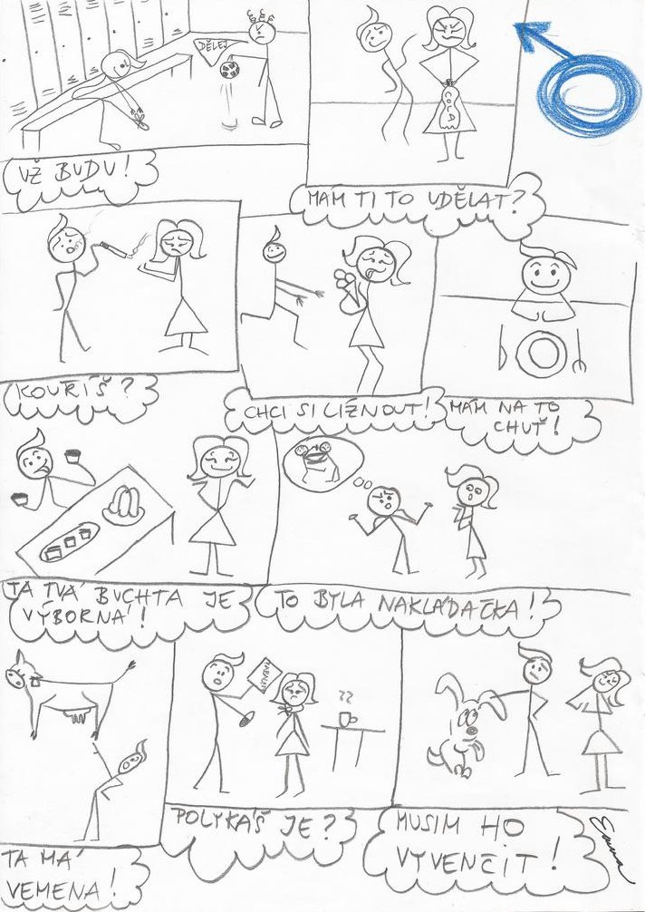
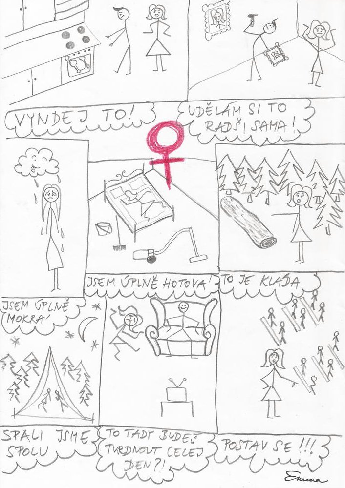

« předchozí článek | obsah čísla | následující článek »
Následující myšlenky nemusejí být v žádném smyslu pravdivé. Předkládám vám je jako výplody své duše bez jakékoliv záruky, dokonce bez implicitní záruky pochopitelnosti. Jsou to myšlenky s ručením omezeným.
- Pochází slovo myšlenka ze slova myš, nebo naopak?
- Mimozemšťané jsou produktem lidské fantazie podobně jako například draci. To ovšem neznamená, že neexistují.
- Kruhy v obilí jsou většinou malé a nemají vůbec kruhový tvar. Pozornost lidí však přitahují jen ty velké a kulaté.
- Většina toho, co dnes lidé říkají, má sexuální podtext. Pro většinu lidí je nepříjemné myslet na věci, které takový podtext nemají.
- Je rozdíl mezi významy slov ezoterický a exoterický ezoterický, nebo exoterický?
- Bolí lidi hlava z myšlenky, zda je horší brát drogy, nebo se za to stydět?
- V této verzi knihovny není zřejmé, co by měla tato funkce dělat. Proto je doporučeno ji zatím příliš nepoužívat.
- Jestliže to není cokoliv jiného než kachna, je to kachna. Jestliže to není kachna, je to něco jiného.
- Jestliže černá díra je analogií smrti, dochází i u smrti k dilataci času?
- Kdyby existence neexistovala, nebylo by smyslem existenciální filozofie hledat smysl své existence? Nesmysl? Neexistence?
- Přirozené jazyky jsou regulární. Jejich vyjadřovací síla je ekvivalentní výpočetní síle nějakých konečných stavových automatů.
- Lidé, kteří nejsou programátoři, mají problém (s chápáním závorek (jen těch vnořených (od určité úrovně vnoření))).
Většina toho, co dnes lidé říkají, má sexuální podtext.

Pro většinu lidí je nepříjemné myslet na věci, které takový podtext nemají.

« předchozí článek | obsah čísla | následující článek »